Linux实操-常用命令-用户权限类

文章目录
Linux下的用户可以分为三类：
- 超级用户
- 系统用户（伪用户）
- 普通用户
Linux下的组可以分为两类;
- 基本组（私有组）
- 附加组（共有组）
Linux中用户和组的类型
用户类型
Linux下的用户可以分为三类：
- 超级用户：用户名为root，它具有一切权限，只有进行系统维护(例如：建立用户等)或其他必要情形下才用超级用户登录，以避免系统出现安全问题。
- 系统用户（伪用户）：是Linux系统正常工作所必需的用户。主要是为了满足相应的系统进程对文件属主的要求而建立的，例如：bin、daemon、adm、lp等用户。系统用户不能用来登录。
- 普通用户：是为了让使用者能够使用Linux系统资源而建立的，我们的大多数用户属于此类。
组类型
Linux下的组可以分为两类：
- 基本组（私有组）：建立账户时，若没有指定账户所属的组，系统会建立一个和用户名相同的组，这个组就是基本组。
- 附加组（共有组）：可以容纳多个用户，组中的用户都具有组所拥有的权利。
用户和用户组的配置文件
在Linux中，用户账号、密码、用户组信息和用户组密码均是存放在不同的配置文件中的。
| 文件名称 | 文件功能 |
|---|---|
| /etc/passwd | 用户账号文件 |
| /etc/shadow | 用户密码文件 |
| /etc/group | 用户组账号文件 |
| /etc/gshadow | 用户组密码文件 |
用户账号文件
是一个文本文件，用于定义系统的用户账号，由于所有用户都对passwd有读权限，所以该文件中只定义用户账号，而不保存口令。
如下命令可以查看用户账号文件：
|
|
输出结果如下
|
|
上面输出的结果是用户的账号信息，以 ： 隔离，有7个字段，对于字段的依次说明：
| 字段 | 含义 | 补充 |
|---|---|---|
| 账号名称 | 用户登录Linux系统时使用的名称 | |
| 密码 | 以前是以加密格式保存密码的位置，此处只是密码占位符“x”或“*”。若为“x”，说明密码经过了shadow的保护 | |
| UID | 用户的标识，是一个数值，用它来区分不同的用户，每个用户都有一个UID数值 | 超级用户的UID：0 系统用户的UID：1～999 普通用户的UID：≥1000 |
| GID | 用户所在基本组的标识，是一个数值，用它来区分不同的组，相同的组具有相同的GID | |
| 个人资料 | 可以记录用户的完整姓名、地址、办公室电话、家庭电话等个人信息 | |
| 主目录 | 类似Windows 的个人目录，通常是/home/username，这里username是用户名，用户执行“cd～”命令时当前目录会切换到个人主目录 | |
| Shell | 定义用户登录后激活的Shell，默认是Bash Shell |
用户密码文件
如下命令可以查看用户密码文件：
|
|
输出结果如下
|
|
上面输出的结果是用户密码信息，以 ： 隔离，有9个字段，对于字段的依次说明：
| 字段 | 含义 |
|---|---|
| 登录名 | 登录名 |
| 加密口令 | 使用SHA-512/SHA-256/MD5算法加密后的密码（$id$，id为1表示md5，5表示sha256, 6为sha512) ,若为空,表示该用户无需密码即可登录,若为"*“表示该账号不能用于登录系统，若为“！！”表示该账号密码已被锁定 |
| 最后一次修改时间 | 最后一次更改密码的日期，以距离1970年1月1日的天数表示 |
| 最小时间间隔 | 密码在多少天内不能被修改，默认为0，表示不限制 |
| 最大时间间隔 | 密码在多少天后必须修改，默认99999，表示不限制 |
| 警告时间 | 提前多少天警告用户密码过期，默认为7天，表示不提供警告 |
| 不活动时间 | 密码过期多少天后禁用此用户 |
| 失效日期 | 密码失效日期，以距离1970年1月1日的天数表示，默认为空，表示可永久使用 |
| 标志 | 保留未用，以便以后发展只用 |
用户组账号文件
系统中的每个组，在/etc/group文件中有一行记录，任何用户均可以读取用户组账户信息配置文件。
字段依次说明：
| 字段 | 含义 |
|---|---|
| Groupname | 组的名字 |
| Passwd | 组的加密口令 |
| GID | 是系统区分不同组的ID，在/ect/passwd域中的GID字段使用这个数字来指定用户的基本组 |
| Userlist | 使用,分开的用户名，列出的成员以该组为附加组，本字段可以为空 |
用户组密码文件
/etc/gshadow是/etc/group的加密文件，/etc/gshadow中的内容以:进行分割，共分为4个字段，具体含义如下：
| 字段 | 含义 |
|---|---|
| Groupname | 用户组的名称 |
| Passwd | 对于大多数用户来说，通常不设置组密码，因此该字段常为空，但有时为 !，指的是该群组没有组密码，也不设有群组管理员 |
| 组管理员 | 从系统管理员的角度来说，该文件最大的功能就是创建群组管理员 |
| 组中的附加用户 | 该字段显示这个用户组中有哪些附加用户，和 /etc/group 文件中附加组显示内容相同 |
用户管理
useradd：添加用户
-
基本语法
1 2useradd 用户名 # 功能描述：添加新用户 useradd -g 组名 用户名 # 功能描述：添加加新用户到某个组 -
选项说明
root用户的文件夹是
/root，普通用户的用户文件夹在/home/下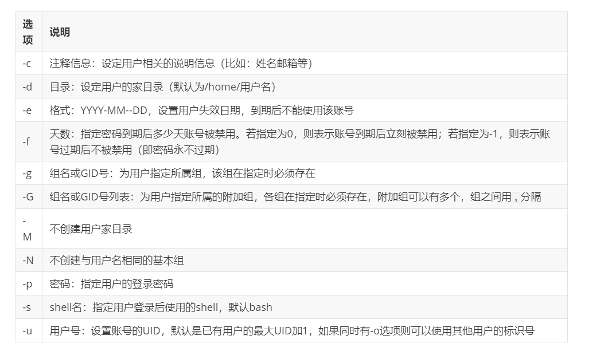
-
实操案例
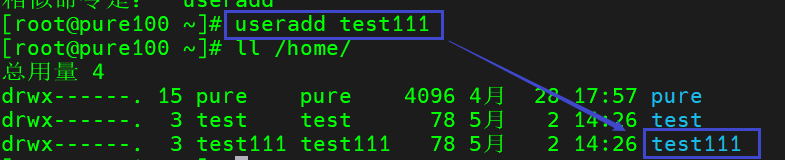
passwd：设置用户密码
-
基本语法
1passwd [选项] 用户名 # 功能描述：设置用户密码 -
选项说明
-
实操案例
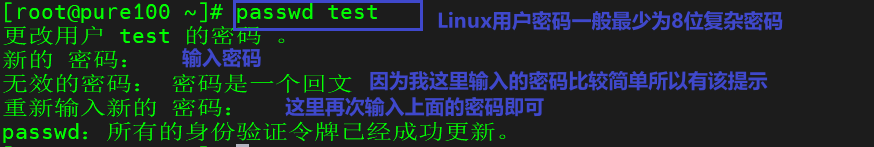
id：查看用户是否存在
-
基本语法
1id 用户名 # 功能描述：查看用户是否存在 -
实操案例
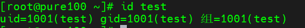
su：切换用户
-
基本语法
1 2su 用户名 # 功能描述：切换用户，只能获得用户的执行权限，不能获得环境变量 su - 用户名 # 功能描述：切换到用户并获得该用户的环境变量及执行权限 -
特别说明
-
root用户切换到普通用户不需要输入密码，普通用户之间的切换，或普通用户切换到root用户需要密码
-
用户的切换是基于当前会话的一个层层嵌套的关系，例如：当前会话是以root用户创建的，当你进行切换用户操作时，会在当前的root会话下在嵌套一层会话，可以使用
exit命令返回到上一层用户会话，详细见下图：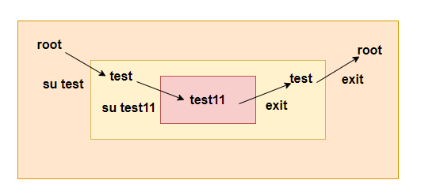
-
-
实操案例
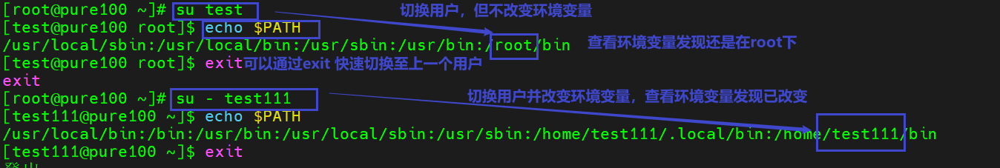
uesrdel：删除用户
-
基本语法
1userdel 用户名 # 删除用户 -
选项说明
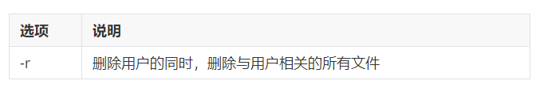
-
实操案例
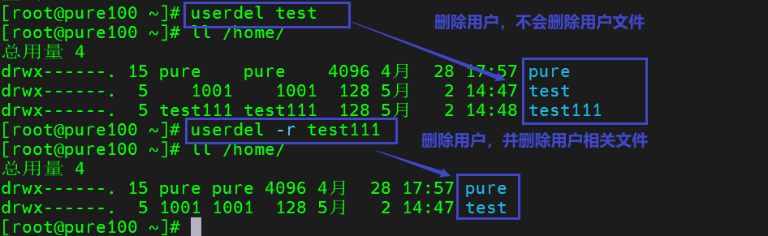
users：查看当前登录系统的用户
-
基本语法
1users # 功能描述：查看当前登录系统的用户 -
实操案例
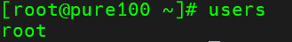
who：查看用户登录信息
-
基本语法
1 2whoami # 显示自身用户名称 who am i # 显示登录用户的用户名以及登录时间 -
实操案例
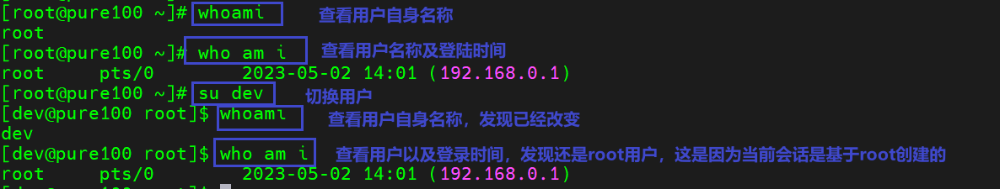
last：列出登陆过系统的用户信息
-
基本语法
1 2last # 功能描述：列出登陆过系统的用户信息，默认读取/var/log/wtmp文件 last -5 # 功能描述：显示最近的5条登录信息 -
实操案例
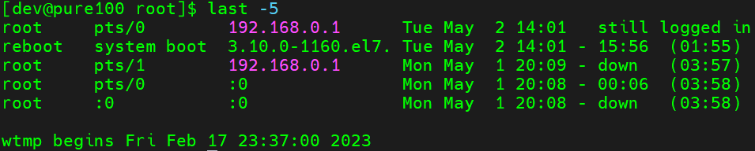
lastlog：查看每个账号的最近登录时间
-
基本语法
1lastlog # 功能描述： 查看每个账号的最近登录时间，读取/var/log/lastlog文件 -
实操案例
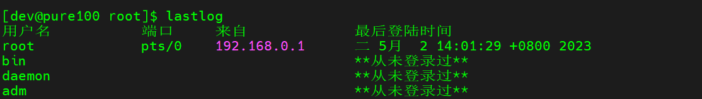
w：显示登录到系统的用户信息
-
基本语法
1w # 功能描述：示登录到系统的用户信息 -
实操案例
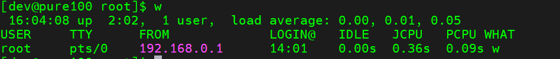
sudo：设置普通用户具有root权限
使用sudo命令可以提高普通用户的操作权限，不过这个权限需要root用户进行配置/etc/sudoers文件才可使用。
修改修改流程如下：
-
添加dev用户，并设置密码
1 2useradd dev passwd dev -
修改配置文件
1vim /etc/sudoers修改/etc/sudoers 文件，找到下面一行(100 行左右)，在root 下面添加一行，如下所示：
1 2 3## Allow root to run any commands anywhere root ALL=(ALL) ALL dev ALL=(ALL) ALL或者配置成采用sudo 命令时，不需要输入密码
1 2 3## Allow root to run any commands anywhere root ALL=(ALL) ALL dev ALL=(ALL) NOPASSWD:ALL修改完毕，现在可以用dev帐号登录，然后用命令sudo ，即可获得root 权限进行操作。
-
实操案例
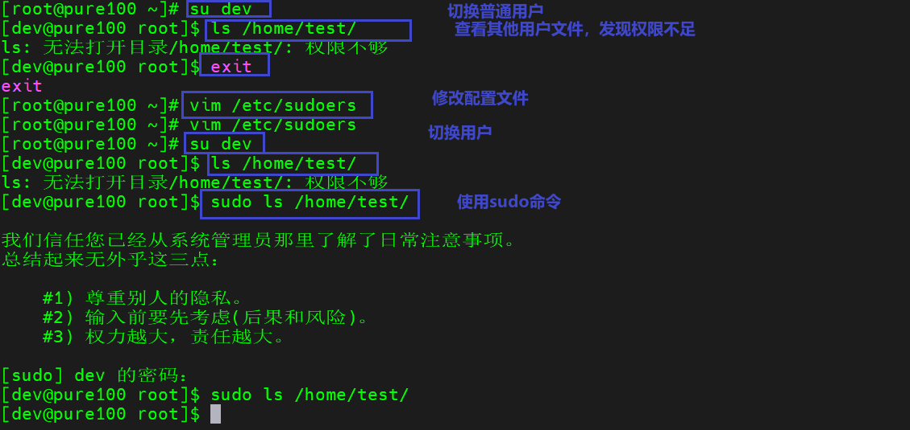
usermod：修改用户
-
基本语法
1usermod [选项] 用户名 -
选项说明
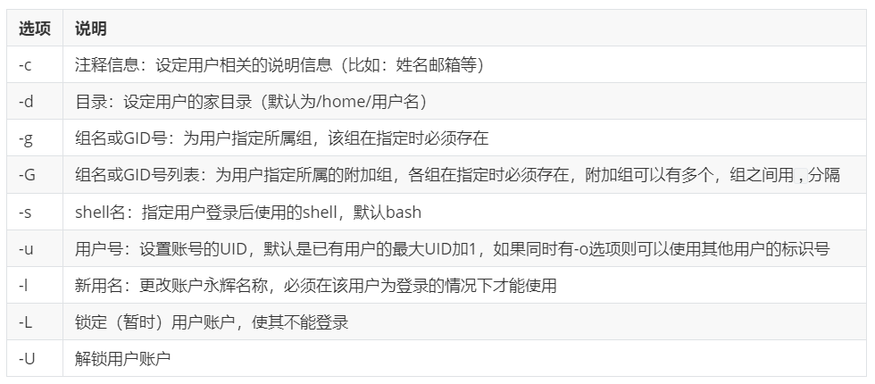
-
实操案例
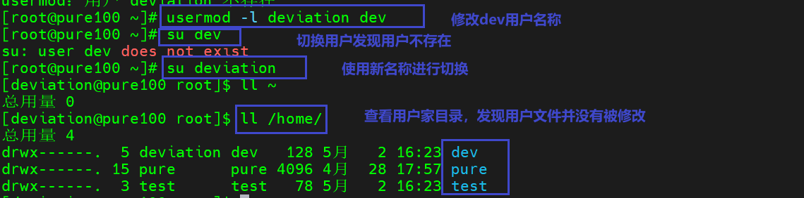
用户组管理
每个用户都有一个用户组，系统可以对一个用户组中的所有用户进行集中管理。不同Linux 系统对用户组的规定有所不同，如Linux下的用户属于与它同名的用户组，这个用户组在创建用户时同时创建。 用户组的管理涉及用户组的添加、删除和修改。组的增加、删除和修改实际上就是对/etc/group文件的更新
groupadd：新增组
-
基本语法
1groupadd [选项] 组名 # 功能描述：创建用户组 -
选项说明
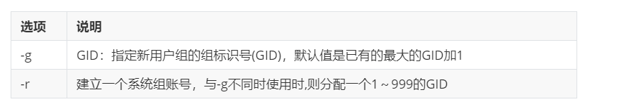
-
实操案例
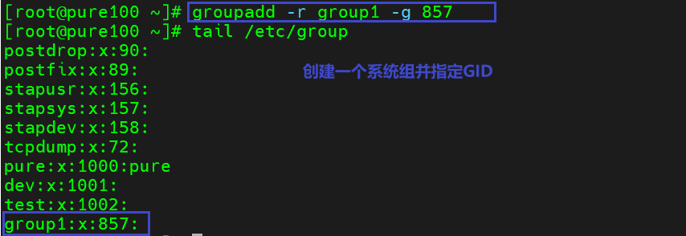
groupmod：修改组
-
基本语法
1groupmod [选项] 用户组 # 功能描述：修改用户组信息 -
选项说明
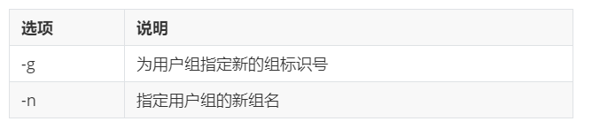
-
实操案例
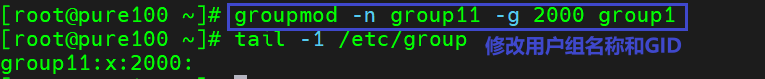
gpasswd：添加删除组成员
-
基本语法
1gpasswd [选项] 用户 用户组 # 功能描述：删除添加用户组成员 -
选项说明
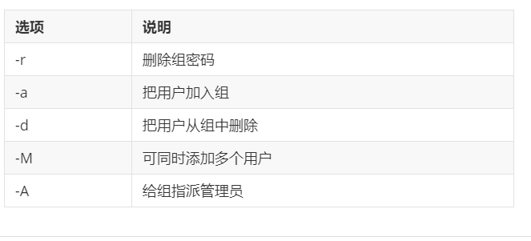
-
实操案例
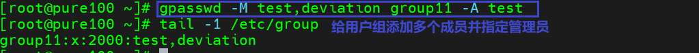
groups：查询用户组信息
-
基本语法
1grous 用户名 # 功能描述：查询用户相关用户组 -
实操案例
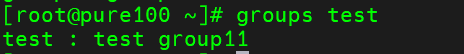
groupdel：删除组
-
基本语法
1groupdel 用户组 # 功能描述：删除用户组 -
说明
被删除的组若是基本组，则必须先删除引用该基本组的用户，然后再删除该基本组。
-
实操案例
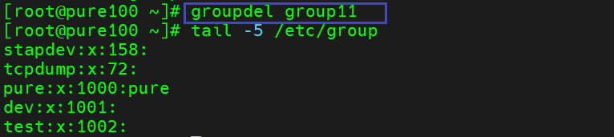
文章作者 Pure3417
上次更新 2023-05-01